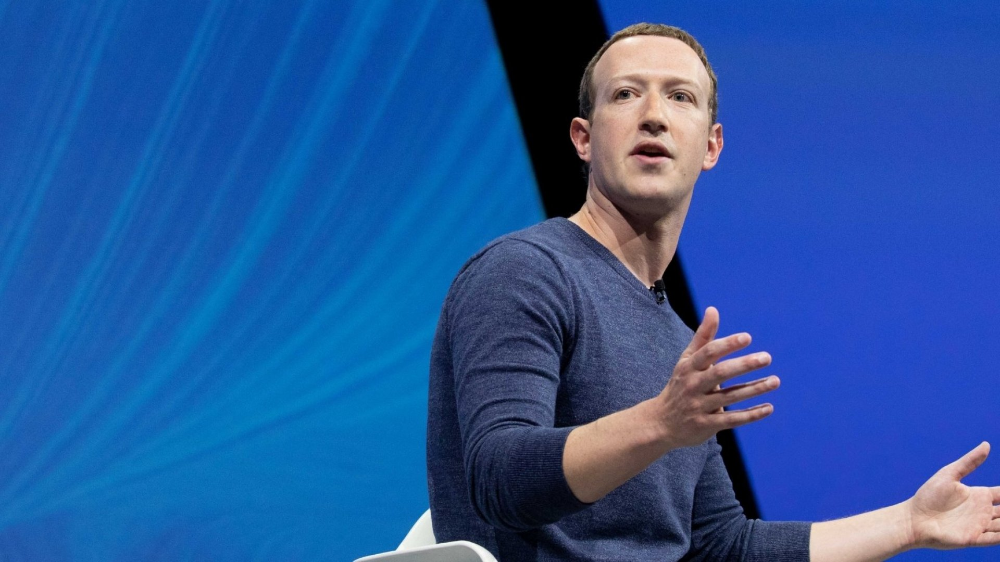
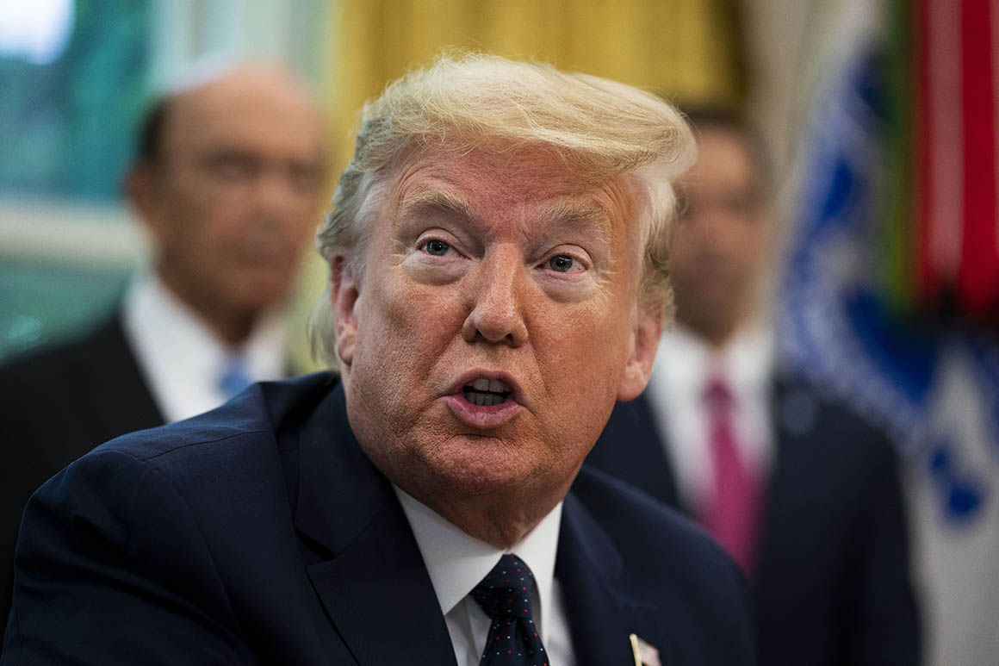
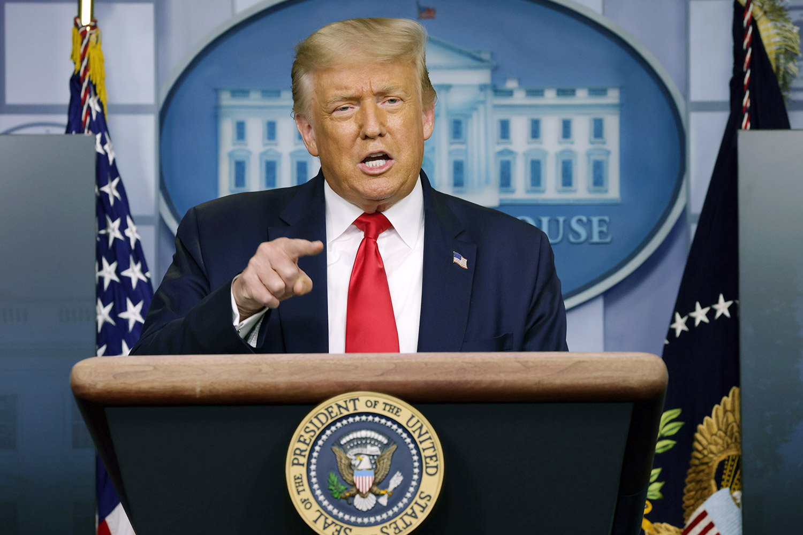
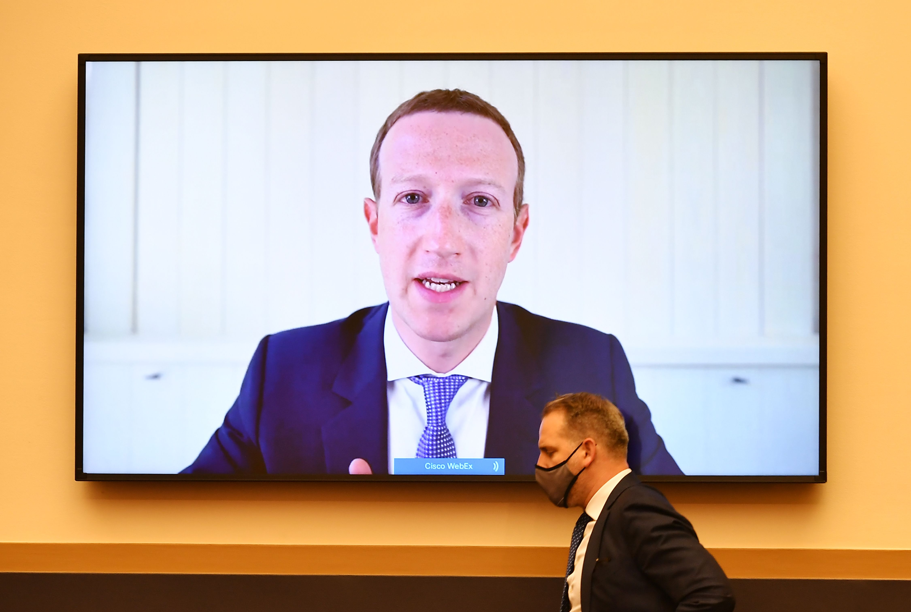

A company-appointed panel ruled that the ban was justified at the time but added that the company should reassess its action and make a final decision in six months.
By Mike Isaac of The New York Times.
Re-designed by Julia Rosier, University of Maryland
SAN FRANCISCO — A Facebook-appointed panel of journalists, activists and lawyers on Wednesday upheld the social network’s ban of former President Donald J. Trump, ending any immediate return by Mr. Trump to mainstream social media and renewing a debate about tech power over online speech.
Facebook’s Oversight Board, which acts as a quasi-court over the company’s content decisions, ruled the social network was right to bar Mr. Trump after the insurrection in Washington in January, saying he “created an environment where a serious risk of violence was possible.” The panel said that ongoing risk “justified” the move.
But the board also kicked the case back to Facebook and its top executives. It said that an indefinite suspension was “not appropriate” because it was not a penalty defined in Facebook’s policies and that the company should apply a standard punishment, such as a time-bound suspension or a permanent ban. The board gave Facebook six months to make a final decision on Mr. Trump’s account status.
“Our sole job is to hold this extremely powerful organization, Facebook, accountable,” Michael McConnell, co-chair of the Oversight Board, said on a call with reporters. The ban on Mr. Trump “did not meet these standards,” he said.
The decision adds difficulties to Mr. Trump rejoining mainstream social media, a key source of his clout that he used during his White House years to directly cajole his tens of millions of followers, exploit their grievances, set policy and criticize opponents. Twitter and YouTube had also cut off Mr. Trump in January after the insurrection at the Capitol building, saying the risk and potential for violence that he created were too great.
But while Mr. Trump’s Facebook account remains suspended, he may be able to return to the social network once the company reviews its action. Mr. Trump still holds tremendous sway over Republicans, with his false claims of a stolen election continuing to reverberate. On Wednesday, House Republican leaders moved to expel Representative Liz Cheney of Wyoming from her leadership post for criticizing Mr. Trump and his election lies.
In a statement, Mr. Trump did not directly address the board’s ruling. But he slammed Facebook, Google and Twitter — some of which have been major fund-raising platforms for him — and called them corrupt.
“Free Speech has been taken away from the President of the United States because the Radical Left Lunatics are afraid of the truth,” he said.
Mr. Trump’s continued Facebook suspension gave Republicans, who have accused social media companies of suppressing conservative voices, new fuel against the platforms. Mark Zuckerberg, Facebook’s chief executive, has testified in Congress several times about whether the social network has shown bias against conservative political views. He has denied it.
Senator Marsha Blackburn, Republican of Tennessee, said the Facebook board’s decision was “extremely disappointing” and that it was “clear that Mark Zuckerberg views himself as the arbiter of free speech.” And Representative Jim Jordan, Republican of Ohio, said Facebook, which faces antitrust scrutiny, should be broken up.
“Our sole job is to hold this extremely powerful organization, Facebook, accountable."
- Michael McConnell, co-chair of the Oversight Board
Democrats were also unhappy. Frank Pallone, the chairman of the House energy and commerce committee, tweeted, “Donald Trump has played a big role in helping Facebook spread disinformation, but whether he’s on the platform or not, Facebook and other social media platforms with the same business model will find ways to highlight divisive content to drive advertising revenues.”
The decision underlined the power of tech companies in determining who gets to say what online. While Mr. Zuckerberg has said that he does not wish his company to be “the arbiter of truth” in social discourse, Facebook has become increasingly active about the kinds of content it allows. To prevent the spread of misinformation, the company has cracked down on QAnon conspiracy theory groups, election falsehoods and anti-vaccination content in recent months, before culminating in the blocking of Mr. Trump in January.

“This case has dramatic implications for the future of speech online because the public and other platforms are looking at how the oversight board will handle what is a difficult controversy that will arise again around the world,” said Nate Persily, a professor at Stanford University’s law school.
He added, “President Trump has pushed the envelope about what is permissible speech on these platforms and he has set the outer limits such that if you are unwilling to go after him, you are allowing a large amount of incitement and hate speech and disinformation online that others are going to propagate.”
In a statement, Facebook said it was “pleased” that the board recognized that its barring of Mr. Trump in January was justified. It said it would consider the ruling and “determine an action that is clear and proportionate.”.
Mr. Trump’s case is the most prominent that the Facebook Oversight Board, which was conceived in 2018, has handled. The board, which is made up of 20 journalists, activists and former politicians, reviews and adjudicates the company’s most contested content moderation decisions. Mr. Zuckerberg has repeatedly referred to it as the “Facebook Supreme Court.”

But while the panel is positioned as independent, it was founded and funded by Facebook and has no legal or enforcement authority. Critics have been skeptical of the board’s autonomy and have said it gives Facebook the ability to punt on difficult decisions.
Each of its cases is decided by a five-person panel selected from among the board’s 20 members, one of whom must be from the country in which the case originated. The panel reviews the comments on the case and makes recommendations to the full board, which decides through a majority vote. After a ruling, Facebook has seven days to act on the board’s decision.
Since the board began issuing rulings in January, it has overturned Facebook’s decisions in four out of the five cases it has reviewed. In one case, the board asked Facebook to restore a post that used Joseph Goebbels, the Nazi propaganda chief, to make a point about the Trump presidency. Facebook had earlier removed the post because it “promoted dangerous individuals,” but complied with the board’s decision.
In another case, the board ruled that Facebook had overreached by taking down a French user’s post that erroneously suggested the drug hydroxychloroquine could be used to cure Covid-19. Facebook restored the post but also said it would keep removing the false information following guidance by the Centers for Disease Control and Prevention and the World Health Organization.

In Mr. Trump’s case, Facebook also asked the board for recommendations on how to handle the accounts of political leaders. On Wednesday, the board suggested the company should publicly explain when it was applying special rules to influential figures, though it should impose definite time limits when doing so. The board also said Facebook should clarify its strikes and penalties process, and develop and publish a policy that governs responses to crises or novel situations where its regular processes would not prevent imminent harm.
“Facebook has been clearly abused by influential users,” said Helle Thorning-Schmidt, a co-chair of the Oversight Board.
Facebook does not have to adopt these recommendations but said it “will carefully review” them.
For Mr. Trump, Facebook was long a place to rally his digital base and support other Republicans. More than 32 million people followed him on Facebook, though that was far fewer than the more than 88 million followers he had on Twitter.
Over the years, Mr. Trump and Mr. Zuckerberg shared a testy relationship. Mr. Trump regularly assailed Silicon Valley executives for what he perceived to be their suppression of conservative speech. He also threatened to revoke Section 230, a legal shield that protects companies like Facebook from liability for what users post.
Mr. Zuckerberg occasionally criticized some of Mr. Trump’s policies, including the handling of the pandemic and immigration. But as calls from lawmakers, civil rights leaders and even Facebook’s own employees grew to rein in Mr. Trump on social media, Mr. Zuckerberg declined to act. He said speech by political leaders — even if they spread lies — was newsworthy and in the public interest.

The two men appeared cordial during occasional meetings in Washington. Mr. Zuckerberg visited the White House more than once, dining privately with Mr. Trump.
The politeness ended on Jan. 6. Hours before his supporters stormed the Capitol, Mr. Trump used Facebook and other social media to try to cast doubt on the results of the presidential election, which he had lost to Joseph R. Biden Jr. Mr. Trump wrote on Facebook, “Our Country has had enough, they won’t take it anymore!”
Less than 24 hours later, Mr. Trump was barred from the platform indefinitely. While his Facebook page has remained up, it has been dormant. His last Facebook post, on Jan. 6, read, “I am asking for everyone at the U.S. Capitol to remain peaceful. No violence!”